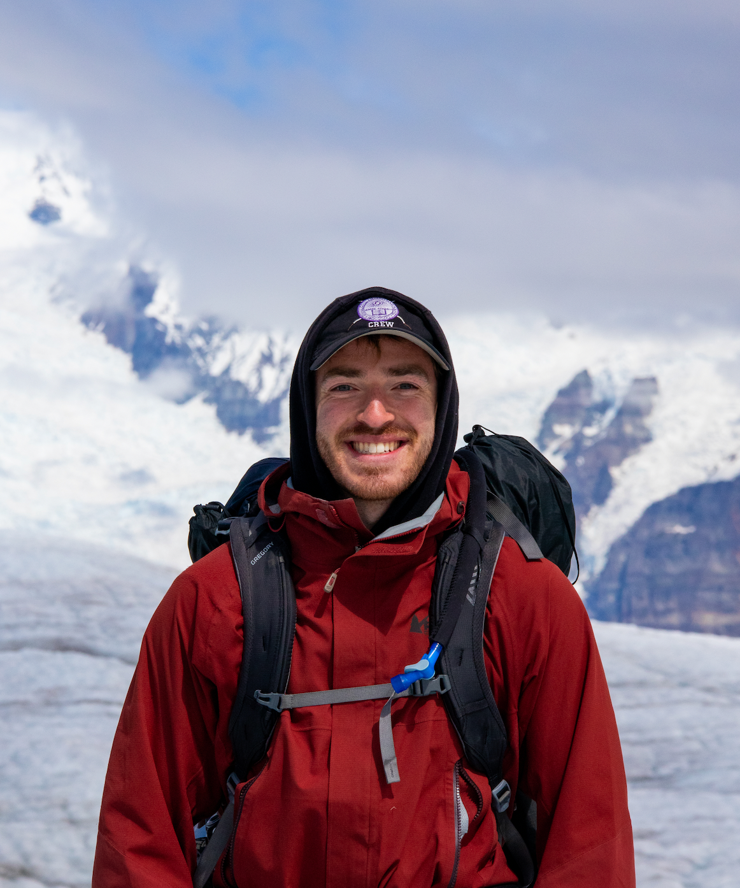

Borehole fiber-optic sensing on Isunnguata Sermia
Using borehole DAS and multi-instrument observations to investigate englacial hydrology, seismicity, and glacier dynamics.
EARTH & SPACE SCIENCES · UNIVERSITY OF WASHINGTON
I study Earth system dynamics using geophysical observations and physics-based modeling.
ABOUT
I am a Ph.D. student in Earth and Space Sciences at the University of Washington, advised by Prof. Brad Lipovsky. My research interests include fiber-optic sensing, observational seismology, cryosphere geophysics, seismic tomography, inverse problems, and physics-based modeling of Earth systems.
My current work develops distributed acoustic sensing methods for marine, volcanic, and glacial environments, with an emphasis on ambient noise, natural-source seismology, surface-wave imaging, and time-lapse monitoring.

SELECTED RESEARCH
Using borehole DAS and multi-instrument observations to investigate englacial hydrology, seismicity, and glacier dynamics.

Imaging ocean-bottom sediment structure from ambient seismic wavefields on submarine fiber offshore Oregon.

Repeated roadside DAS measurements for time-lapse tomography of hydrothermal-feature evolution.

Combining radar, ICESat-2, and glacier-flow modeling to investigate englacial and basal structure.
Modeling atmospheric plume geometry and uncertainty for greenhouse-gas emission measurements.
SELECTED PUBLICATIONS
Holschuh, N.; Christianson, K.; Dienstfrey, W.; et al.
View publication →Stroud, J. R.; Dienstfrey, W. J.; Plusquellic, D. F.
View publication →